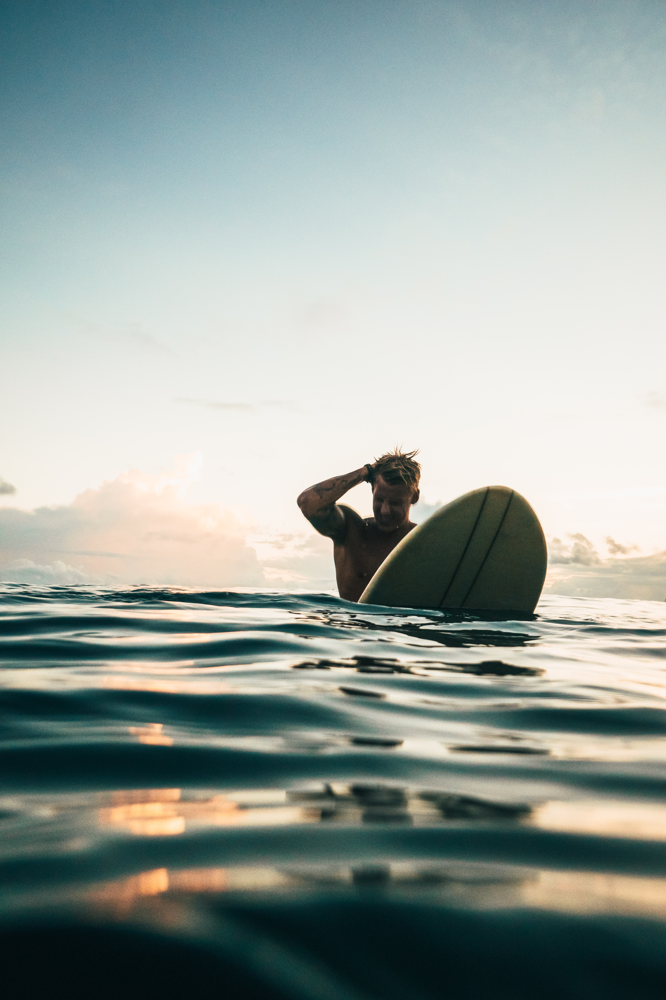

Testimonials
Take a look at what our clients say...
This virtual tour was really cool. I actually believe I was in there. For sure I will visit Puntarenas someday, the most beautiful place I saw was Manuel Antonio National Park. I love Costa Rica!.

- Sam Smith, New York
I loved Costa Rica, it is one of the most beautiful countries in the world, and their people, they are so kind, I even learned a new word! it goes like "Pura vida". For sure I will go again.
- Sara Williams, Oslo
I loved swimming in the depths of the ocean. I saw a cute turtle, and I ate a delicious fish. For me and my husband Ron, Costa Rica will be our favourite place to go on vacations.

- Eva Watson, London
Puntarenas was really awesome, their beaches were great for surfing and making scuba diving. You can take me out of Costa Rica, but you'll never take Costa Rica out of me.
- 
- Steve Thompson, Jamaica